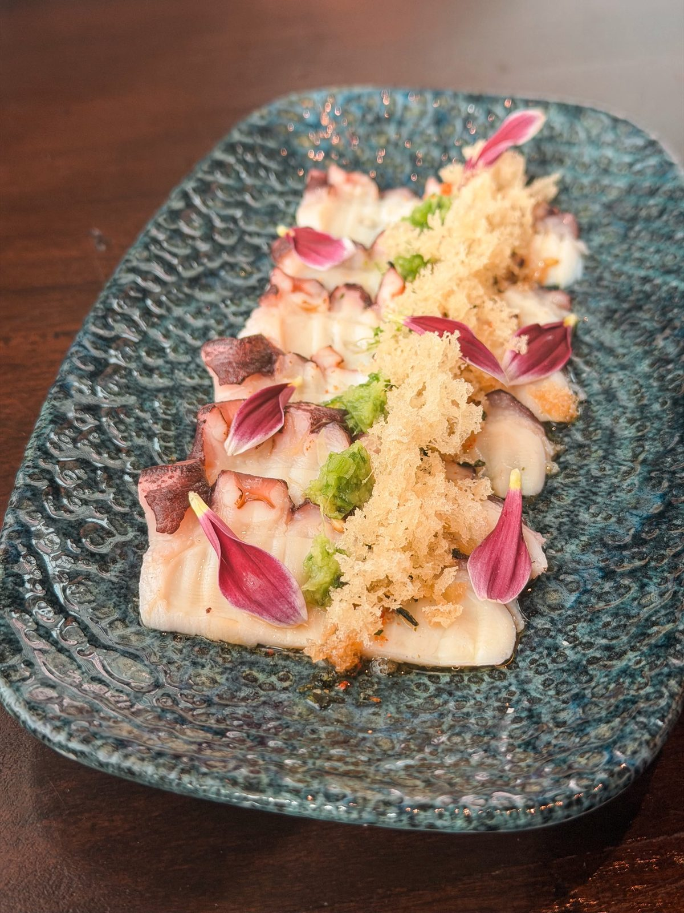
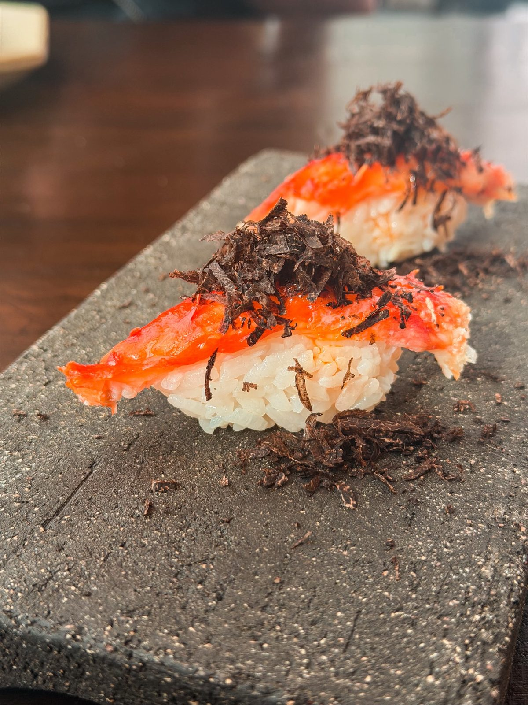
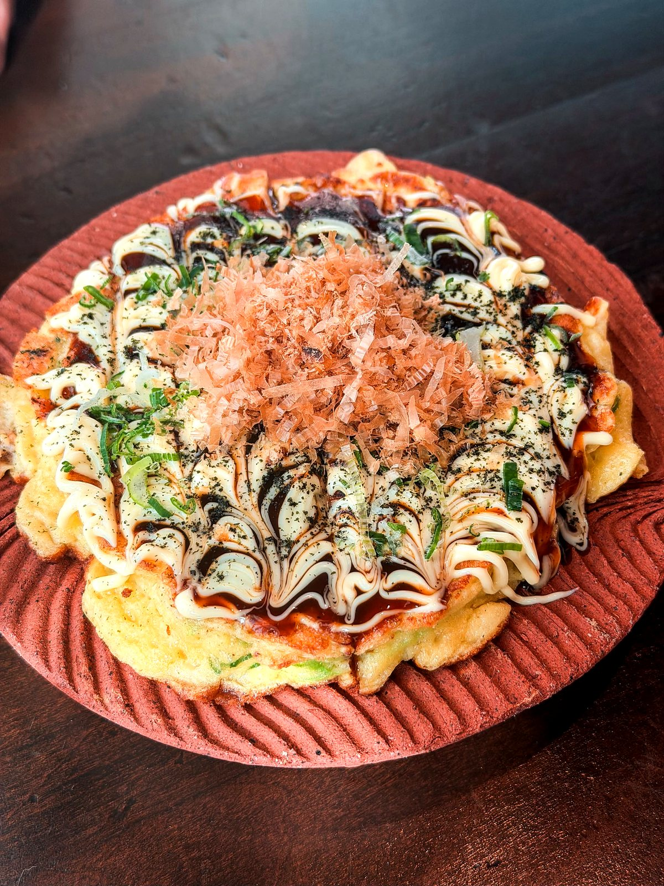

10 grs. primer caviar de asturión siberiano, 100% Chileno.
Espíritu del Inari — tierra y prosperidad
Edamame Bata Nori
海苔バター枝豆
$6.000
Edamame con mantequilla de nori y shichimi togarashi.
Espíritu del Kodama — pureza de la naturaleza
Gyosas Lengua (5 unid.)
ギョーザの舌
desde $14.990
Lengua de wagyu y curry japonés (5 unidad)
Recomendación del chef
Caviar Kenoz
$29.900
Caviar Oscietra, 15 gr.
Espíritu del Tanuki — elegancia inesperada
Nasu Dengaku
茄子田楽
$10.900
Berenjena confitada en miso, con toques de aceite de yuzu.
Edamame al Vapor
枝豆
$5.500
Edamame con sal de mar.
Tori Karaage
唐揚げ鶏
$9.990
Muslo de pollo deshuesado crocante
Espíritu del Yamabiko — tradición de las montañas
Tamago Sando
卵サンド
$12.900
Sandwich de huevo en texturas y láminas de trufa.
Katsusando
カツサンド
$12.900
Sandwich típico japonés de cerdo. Acompañado de salsa TENGU y repollo.
Espíritu del Oni — intensidad y carácter
Gyu Kuro Sando
牛黒サンド
$14.900
Sandwich de filete de ternera en panko y pan de masa madre en tinta de Calamar
Risotto Omakase
おまかせリゾット
$19.900
Risotto con productos premium. Consultar disponibilidad.
Espíritu del Tengu — selección del maestro
Gyosas Ume Foie (1 unid.)
餃子 UME FOIE
$3.990
Gyozas de Foie Gras y Umeboshi
Recomendación del chef
Gyosas Ebi (5 unid.)
餃子エビ
$9.990
Gyozas de Camaron y Sweet Chily Oil
Recomendación del chef
Gyosas Veggie Setas (5 unid.)
ベジギョーザ
$14.990
Rellenas de setas de estación y Yogurth acido trufado
Recomendación del chef
Miso Soup
みそ汁
$4.500
Reconfortante y clasica sopa Miso Shiru
Recomendación del chef
Otsumami (1 unid.)
Reinterpretaciones de platos en formato de bocados
Unagi Tamago (1 unid.)
ウナギ卵
$8.900
Anguila a la parrilla sobre torrtilla de huevo dulce
Tako Robatayaki (1 unid.)
タコ炉端焼き（１個）
$12.900
Pulpo karami crocante ceste de naranja sobre un cuenco de arroz
Takumi Wagyu
$13.900
Hojaldre de papa crocante y Tartar de Wagyu de Osorno y trufa negra italiana
Tártaros
Tartar de Salmon
鮭タルタル
$10.900
Acompañado de raíz de loto crocante, salmón con notas spicy.

Sashimi
12 platos
Honmaguro · atún bluefin: por temporada y en eventos. Consultar en sala.
Sashimi
9 Cortes (Mix de Pescado del Día)
9カット
Consultar
Sashimis mixto de pesca del dia
Recomendación del chef
15 Cortes (Incluye Atun Bluefin)
刺身15切れ+ブルーフィン
$40.900
Sashimi mixto, incluye atún bluefin.
Recomendación del chef
15 Cortes Moriawase (Mix de Pescado Fresco y Mariscos)
15カット
$32.900
Recomendación del chef
25 Cortes Moriawase (Mix de Pesca del Día y Mariscos)
25カット
Consultar
Pescados y mariscos de estación. Consultar variedad
Espíritu del Kitsune — picante y elegante
Tengu (5 Variedades de Mariscos Frescos)
$26.900
Mariscos del día (5 productos). *Consultar variedad
Sashimi Hirame 5 Cortes
$16.900
Lenguado
Recomendación del chef
Uzuzukuri
Usuzukuri Sake
鮭薄造り
$17.900
Slice de Salmon y Ponzu
Usuzukuri Shiromi (Pescado Blanco)
白身
$16.900
Alice de pescado blanco y ponzu
Usuzukuri Sakana Uni
鮑薄造り雲丹
$20.990
Pesca blanca y topping de Erizos de Caldera y Ponzu
Hotate Miso
ホタテ味噌
$22.900
Ostiones Patagonicos y salsa Sumiso y aceite de Yuzu
Usuzukuri Hirame
薄造り魚ウニ
$24.900
Usuzukuri de lenguado
Usuzukuri Omakase
おまかせ
$21.990
Encántese con elección del chef

Nigiris
18 platos
Nigiri Tradicional (1 unid.)
Nigiri Sake (1 unid.)
酒
$4.200
Recomendación del chef
Nigiri Shiromi (1 unid.)
白身
$4.200
Nigiri de pescado blanco fresco.
Recomendación del chef
Ikura Gunkan (1 unid.)
イクラ軍艦（1個）
$4.900
Ovas de Salmon Wasabi y soya envuelto en Nori
Recomendación del chef
Gunkan Omakase (1 unid.)
軍艦おまかせ（1貫）
$5.900
Eleccion del Itamae
Recomendación del chef
Nigiri Unagi (1 unid.)
ウナギ
$4.400
Nigiri de anguila
Nigiri Tamago (1 unid.)
たまご
$4.200
Clásica tortilla de huevo dulce hecha por capaz
Nigiri Hotate (1 unid.)
ホタテ
$4.200
Ostión Patagónico fresco
Gunkan Erizo (1 unid.)
$4.900
Erizo de Caldera envuelto en alga Nori
Nigiri Omakase (1 unid.)
Nigiri Sake Harasu (1 unid.)
鮭のお刺身
$6.900
Ventresca de Salmon Aburi y mantequilla de miso y Katsuobushi
Nigiri Hirame Omakase
島の魚の握り
$6.900
A seleccion del chef
Nigiri Uni Foie (1 unid.)
$10.900
Erizo de Caldera y Foie Gras
Recomendación del chef
Nigiri Ebi Miso y Umeboshi (1 unid.)
エビ味噌＆梅干
$6.990
Langostino Patagónico, miso cítrica y Umeboshi
Nigiri Shiromi Yuzukosho (1 unid.)
白身の魚と柚子胡椒
$6.900
Pescado blanco y lactofemento de piel de limon y aji
Recomendación del chef
Nigiri Wagyu Uni (1 unid.)
$7.900
Wagyu aburi y erizo de Caldera
Nigiri Hotate Trufa (1 unid.)
ホタテ＆トリュファ
$7.900
Ostiones patagónicos con láminas de trufa.
Recomendación del chef
Nigiri Wagyu Trufa (1 unid.)
和牛とトリュファ
$7.900
Wagyu de Osono Aburi, Trufa de temporada
Nigiri Wagyu Aburi Foie (1 unid.)
和牛とフォアグラの炙り
$7.900
Wagyu de Osorno Aburi y Foie Gras
Espíritu del Hachiman — guerrero y protector
Nigiri Tamago Uni (1 unid.)
$6.900
Clásica tortilla de huevo dulce Japonesa y Erizo de Caldera
Espíritu del Raijin — el trueno y el fuego
Makis
Hashiman Maki
八幡巻き
$16.900
Centro de camaron,salmon cebollin sin arroz, envuelto en palta
Raijin Maki
雷神巻き
$16.900
Centro de Camaron,Tamagoyaki, Takuan y cebollin,envuelto en Anguila Aburi y crispy tempura
Recomendación del chef
Fujin Maki
$15.900
Piure tempura,cebollin,aji verde, envuelto en pescado blanco y ponzu
Espíritu del Koi — perseverancia y belleza
Hotate Maki
ホタテ巻き
$15.900
Futomaki sin arroz con centro de Camarón tempura,Salmón,palta y cebollín con topping de Ostión ligeramente sopleteado con mantequilla trufada
Recomendación del chef
Koi Maki
鯉巻き
$16.900
Triple textura de Salmon en su centro agridulce, envuelto Aburi y topping de crocancia de Salmon
Kabuto Maki
兜巻き
$16.900
Centro de pescado blanco, Aji verde, pepino y topping de tartar de locos, Edamame wasabi y yuzu
Recomendación del chef
Naruto Maki
ナルト巻
$14.900
Katsuramuki de pepino sin arroz con centro de salmón, langostinos,wakame,cebollín y ají verde
Espíritu del Tengu — el guardián mismo
Isa Maki
$16.900
Anguila crocante, cebolla tempura, cebollín, masago env en salmón aburí en aceite de sésamo salsa unagui y ceste de limon
Horenzo Maki
ホレンゾ巻き
$16.900
Centro de vegetales fresco y tempura, envuelto en espinaca y arroz con topping de tartar de salmon semi spicy
Sapporo Maki
札幌巻き
$19.900
Centro de pescado blanco, takuan, cebollin, palta env en papel de arroz, tártaro de Centollla y salsa ponzu ( sin arroz)
Tengu Maki
天狗巻き
$16.900
Centro de Anguila crocante,palta,cebolla tempura,cebollin, env en arroz y masago
Ebisu Maki
恵比寿巻き
$16.900
Locos, masago,takuan,cebollin, acompañado de salsa tengu.
Hosomaki
Kappa
河童
$4.900
Maki de pepino y semillas de sésamo.
Sake
酒
$5.500
Maki de salmón.
Unagi
ウナギ
$7.000
Maki de anguila.
Oshinko
お新香
$5.900
Maki takuan, rábano japonés.
Temaki (cono de nori y arroz)
Ebi Ten (1 unid.)
エビ天
$8.900
Camarón tempura y palta.
Omakase (1 unid.)
おまかせ
$13.900
Especial del chef.
Unagi (1 unid.)
ウナギ
$8.900
Anguila y takuan, salsa agridulce.
Sake (1 unid.)
酒
$7.900
Salmón y palta.
Sake Spicy (1 unid.)
辛い酒
$7.900
Tártaro de salmón sutil picante.

Cocina Caliente
21 platos
Tempuras
Langostinos
エビ
$18.900
Langostinos tempurizados 5 unidades
Recomendación del chef
Veggie
ベジー
$9.990
Mix de vegetales de temporada y salsa tradicional tempura.
Espíritu del Ryujin — dos tesoros del mar
Camarones
エビ
$7.990
Camarones crunchy (7 unid)
Tempura Moriawase
天ぷら盛り合わせ
$18.900
Donburis
Cuencos de arroz , proteinas y toppings
Kaisen Don
$22.900
Donburi con Mixpescado y mariscos de temporada
Una Tamago Don
$22.900
Anguila a la parrilla y Tamagoyaki sobre cuenco de arroz
Donburi Omakase
$29.900
Cuenco de arroz, con proteína a elección del chef
Mini Donburis
Mini cuencos de arroz ,proteinas y toppings
Sake Ikura Don
ウニイクラ丼
$14.900
MIni cuenco de arroz Salmon e Ikura
Uni Ikura Don
雲丹いくら丼
$14.900
Erizos de Caldera e Ikura sobre arroz.
Espíritu del Ryujin — generosidad del océano
Mini Donburi Omakase
ミニ丼おまかせ
$21.900
mini cuenco,base de arroz lonchas de Wagyu de Osorno, tartufo italiano y yema de huevo curada
Ramen
Tempura Udon
$13.900
Caldo base de Dashi y Kombu, fideo Udon,yema de huevo y camarones tempura
Espíritu del Raijin — el fuego del maestro
Cocina caliente
Ise Ebi Miso
ロブスター味噌
$44.900
Cola de Langosta gratinada en Miso
Kakis Miso Yaki (5 unid.)
$13.900
Ostra japonesa gratinada en miso y sake
Espíritu del Inari — abundancia dorada
Ise Ebi Teppan
伊勢海老鉄板
$42.000
Langosta a la plancha con mantequilla de nori y hierbas de estación. (para compartir)
Wagyu Teppanyaki
和牛鉄板焼き
$27.900
Wagyu de Osorno, Shitake y topping para untar
Espíritu del Kappa — tesoro de las costas
Tendon
天丼
$15.900
Tempura mixta sobre cuenco de arroz y salsa Tensuyo
Okonomiyaki Awabi Piure
お好み焼き鮑ピウレ
$16.900
Espíritu del Yamabiko — confort de las montañas
Gyutan de Wagyu
牛タン
$17.900
Lengua de Wagyu de Osorno a la robatayaki
Asari Bata-mushi (5 unid.)
$10.900
Almejas salteadas en sake con mantequilla y morchella
Espíritu del Teru-teru Bozu — serenidad y dulzura
Katsu Karēdon
カツカレー丼
$17.900
Cerdo crocante y curry sobre arroz blanco.
Espíritu del Inari — la ceremonia del cierre
Okonomiyaki con Panceta de Cerdo
お好み焼き
$13.900
Tortilla tradicional de vegetales y panceta de cerdo.
Espíritu del Baku — el devorador de sueños
Postre
Mousse de Yuzu
柚子ムース
$5.900
Helado Chocolate Selva Negra
$3.900
Tiramisu Matcha
抹茶ティラミス
$5.900
Tiramisu Chocolate
チョコレートティラミス
$5.900
Clásico Tiramisu, finalizado con chocolate amargo.
Sorbete Mandarina del Limarí
$3.900
Aguas Y Bebidas
Perrier 330 CC
ペリエ
$3.300
del sur de Francia Botella de 330 cc.
Espíritu del Kitsune — acidez y viveza
Perrier 750 CC
ペリエ大
$5.900
del sur de Francia Botella 750 cc, con gas.
Virgin Mule
バージンミュール
$4.500
Fermentación natural de Tengu, a base de jengibre y limón.
Espíritu del Tanuki — placer ligero
Jugo del Día
本日のジュース
$3.900
Preguntar disponibilidad.
Limonada
レモネード
$3.900
Espíritu del Suijin — pureza del agua
Coca Cola Original
コカ・コーラ オリジナル
$2.900
350 cc
Coca-cola Zero
コカコーラゼロ
$2.900
350 cc
Coca-cola Light
コカ・コーラ ライト
$2.900
350 cc
Espíritu del Kappa — frescura esencial
Evian 330 CC
フィーバーツリー インディアン ライト トニック 200ml
$3.300
de los Alpes franceses. Botella 330 cc, sin gas.
Fanta Sin Azúcar
無糖ファンタ
$2.900
350 cc
Espíritu del Raijin — energía del trueno
Sprite Sin Azúcar
糖類ゼロのスプライト
$2.900
350 cc
Evian 750 CC
エビアン 750ミリリットル ガス無し
$5.900
de los Alpes franceses. Botella 750 cc, sin gas.
Agua Porvenir Sin Gas
水
$2.500
del Valle de Casablanca, Chile. Botella 330 cc
Ginger Ale Schweppes Sin Azucar
シュウェップス ジンジャーエール
$2.900
310 cc
Fentimans- Naturally Light
フェンティマンズ-ナチュラリーライト、インディアン-
$3.800
Agua Tónica Premium.
Agua Tónica Schweppes
トニックウォーター
$2.900
310 cc
Agua Tónica Schweppes Sin Azucar
シュウェップス スリムトニックウォーター
$2.900
310 cc
Red Bull
レッドブル
$2.900
Cocteleria Tengu
Taiko
太鼓
$7.900
Tequila Don Julio Blanco, Cordial de pomelo-wasabi, vermouth blanco, soda y borde de tajin shichimi togarashi.
Sake Sour
サケサワー
$6.900
Hanami
花見
$7.900
Gin macerado en cranberry y shēng de arándanos, agua fresca de pepino, terminado con yuzusoda. Equilibrio perfecto entre acidez y frescor.
Shinkansen
新幹線
$7.900
Reversión de Clásico Espresso Martini Vodka fat-wash con pasta de miso y durazno nectarín, notas tostadas de sésamo. Acompañado de un shot de café y licor de café. Equilibrio entre dulzor, tostado y profundidad.
Espíritu del Kodama — frescura del bosque
Kumo
クラウド
$7.900
Mezcal 400 Conejos, jugo natural de naranja y limón, finalizado con un toque de Cointreau.
Sayuri
さゆり
$7.900
Cordial de jengibre, miel y soya. Johnnie walker gold, terminado con soda.
Umeshu Highball
梅酒ハイボール
$5.900
Licor de ciruela japonesa y soda.
Cervezas Con Y Sin Alcohol
Estrella Damm (Draft 330cc)
$2.490
Estrella Inedit
$2.490
Cerveza Hitachino Nest Beer
ヒタチノネストビール
$4.900
de Prefectura de Ibaraki, Japón. White Ale (de trigo, con naranja y nuez moscada).
Peroni Sin Alcohol
ペローニノンアルコール
$4.500
Espíritu del Inari — el don del día
Peroni
ノンアルコールのペローニビール
$4.500
330 cc - Con alcohol
Mocktail
Ringo Sour
モクテール３
$5.500
Manzana fuji Pomelo Syrup de canela Matcha de tokio
Nara Highball
奈良ハイボール
$5.500
Manzana Verde Hidrolato menta limón Soda
Cocteleria Clásica
Pisco Sour
ピスコサワー
$6.500
Alto carmen 40, transparente.
Negroni
ネグローニ
$7.900
Limoncello
リモンチェッロ
$5.900
Corto de Limoncello elaborado en TENGU.
Chambord
シャンボール
$5.900
Corto de Licor premium de frambuesas negras
Martini
マティーニ
$7.990
Limoncello Spritz
リモンチェッロスプリッツ
$7.900
Limoncello elaborado en Tengu, acompañado de espumante y finalizado con agua con gas.
Chambord Spritz
シャンボールスプリッツ
$7.900
Licor de frambuesas negras acompañado de espumante y finalizado con agua con gas.
Aperol Spritz
アペロールスプリッツ
$7.900
Clásico italiano. Aperol, espumante brut y soda.
Rosso Sprit
赤いスプリッツ
$7.900
Vermut, espumante y soda
Tequila Margarita
マルガリータテキーラ
$12.900
A base de tequila Don Julio. Sabor citrico, toque salino y herbal.
Ramazzotti
ラマッツォッティ
$7.900
Moscow Mule
モスコーミュール
$7.900
Con ginger beer fermentación natural.
Vermut Soda
ベルモットソーダ
$5.990
Carajillo
カラヒーヨ
$6.900
Licor 43 y café de grano. opción descafeinado (avisar).
Espresso Martini Clásico
エスプレッソマティーニ
$6.900
Gin
Gin Tanqueray Ten
ジン・タンカレー・テン
Consultar
Gin Hendrick´s
ジンヘンドリックス
Consultar
Infusión de pétalos de rosa y pepino combinada con 11 botánicos.
Gin Matsui The Hakuto Premium
松井 - 白戸プレミアム
Consultar
Gin Goodwinds
ジン
Consultar
de la Patagonia de Chile.
Gin Monkey 47
ジン モンキー47
Consultar
originario de la Selva Negra alemana, que incorpora 47 botánicos.
Vodka
Ciroc
ウォッカシロック
Consultar
Grey Goose
ウォッカグレイグース
Consultar
Whisky
Japonés The San IN Blended
ブレンデッド・サン ・ イン
$7.900
De la Región de Tottori, Con notas sutiles de frutas frescas, vainilla y un toque de roble.
Jack Daniels
ジャックダニエルズ
$7.900
Incluye bebida
Johnnie Walker Green
ジョニーウォーカーグリーン
$9.990
Japonés Iwai Tradition
日本の祝い伝統
$10.900
Increíblemente equilibrado, suave y en capas. Con sabores a cereza madura, caramelo de miel con una hermosa especia de jengibre.
Johnnie Walker Gold
ジョニーウォーカー ゴールド
$11.990
Macallan 12 Años
マカラン12年
$17.900
Johnnie Walker Blue
ジョニーウォーカー・ブルー
$25.900
Tequila Y Mezcal
Mezcal 400 Conejos
メスカル400ウサギ
$8.990
Tequila Don Julio Blanco o Reposado
テキーラドンフリオ ブランコまたはレポサド
Consultar
Pisco Y Fernet
Fernet Branca
フェルネット・ブランカ
$8.990
Alto 40° Transparente
透明な40トール
$8.900
Con bebida a elección.
Ron
Ron Zacapa 23 Años.
ザカパ23年。
$9.990
Espíritu del Suijin — abundancia
Cafeteria
Americano
アメリカーノ
$3.900
Espíritu del Inari — suavidad y plenitud
Cortado
コルタード
$3.900
Espíritu del Tengu — la ceremonia del cierre
Cappuccino
カプチーノ
$3.900
Espíritu del Tanuki — placer sin tensión
TÉ Verde , Tetera
緑茶 · ティーポット
$3.500
Genmaisha o Sencha
Espresso Descafeinado
デカフェ
$3.400
Descafeinado
Espíritu del Raijin — concentración y fuerza
Espresso
エスプレッソ
$2.900
Ristretto
リストレット
$2.000
Espíritu del Tengu — esencia pura
Espresso Doble
ダブルエスプレッソ
$3.900
Espíritu del Oni — doble intensidad
Por copa
Champagne
Veuve Clicquot Brut
ウヴ・クリコ ブリュット
$24.500
Sauvignon Blanc
Amayna Cordón Huinca
アマイナ コルドン フインカ 🍷
$7.900
Sauvignon Blanc d el Valle de Leyda Cordón Huinca es un Single Vineyard, proveniente de un sector específico con suelos graníticos de baja fertilidad. La cercanía al mar permite una maduración lenta de las uvas, conservando una gran frescura y complejidad.
Espíritu del Kappa — equilibrio
Amayna
アマイナ
$6.900
de Garces Silva - Leyda – San Antonio
Espíritu del Kappa — equilibrio
Chardonnay
Sierras de Bellavista
ベリャビスタ山地
$7.900
Viticultura de montaña, del Valle de Colchagua.
Espíritu del Kappa — equilibrio
Ensamblaje
Coyam
コヤム
$8.900
de Emiliana 2022 - Colchagua
Espíritu del Kappa — equilibrio
Espumosos
Gemma
ジェマ
$6.000
Brut - Valle del Limari
Espíritu del Kitsune — calidez elegante
Por botella
Champagne
Piper Heidsieck 🇫🇷
ピペール・エイスジェック
$66.900
Veuve Clicquot Brut 🇫🇷
ウヴ・クリコ ブリュット
$115.990
Pinot Noir: 50% a 55%, Chardonnay: 28% a 33%, Pinot Meunier: 15% a 20% El Veuve Clicquot Brut Yellow Label es probablemente uno de los champagnes más reconocidos del mundo. Está elaborado principalmente con Pinot Noir, complementado con Chardonnay y Meunier, y envejece al menos tres años sobre sus lías, lo que le aporta complejidad y elegancia. Un champagne elegante y versátil, con notas de manzana, pera y brioche recién horneado. Tiene una burbuja fina, gran frescura y un final cremoso que lo hace ideal tanto para aperitivo como para acompañar una comida completa.”
Espumosos
Azur
アズール
$29.900
Extra Brut - Limari
Sauvignon Blanc
Cloudy Bay 🇳🇿
クラウディベイ 🇳🇿
$66.900
Cloudy Bay es considerado uno de los referentes mundiales de la cepa Sauvignon Blanc. Es una de las bodegas más icónicas del mundo del vino y probablemente la responsable de que el Sauvignon Blanc de Nueva Zelanda se hiciera famoso a nivel internacional. Fue fundada en 1985 en la región de Marlborough, en la Isla Sur de Nueva Zelanda, y sus primeros vinos causaron una verdadera revolución en el mercado mundial.
Calyptra
$29.900
del valle de casa blanca, año 2020
Domaine Pellé AOC Sancerre 🇫🇷
$39.900
Domaine Pellé Sancerre Blanc · Sauvignon Blanc · Sancerre, Francia Es un Sauvignon Blanc de la denominación Sancerre, en el Valle del Loira, Francia. Un Sancerre de gran fineza y mineralidad. Expresa aromas de cítricos, flores blancas y fruta de hueso, acompañados de una marcada tensión y frescura. Elegante, preciso y persistente, con un final mineral que invita a seguir bebiendo.
Dog Point 🇳🇿
ドッグ ポイント
$39.900
Marlborough, Nueva Zelanda. Año 2024. Estás frente a uno de los Sauvignon Blanc más prestigiosos de Nueva Zelanda. Dog Point fue fundado por dos de los responsables originales del éxito de Cloudy Bay, una de las bodegas que puso a Marlborough en el mapa mundial del vino. A diferencia de muchos Sauvignon Blanc neozelandeses muy explosivos y tropicales, Dog Point tiene un perfil más serio y gastronómico.
Amayna Cordon Huinca 🍷
アマイナ コルドン フインカ 🍷
$29.900
de Garces Silva - Leyda – San Antonio Cordón Huinca es un Single Vineyard, proveniente de un sector específico con suelos graníticos de baja fertilidad. La cercanía al mar permite una maduración lenta de las uvas, conservando una gran frescura y complejidad.
Espíritu del Kappa — equilibrio
Amayna Inox
$22.900
de Garcés Silva 2022 - San Antonio Los suelos graníticos y el clima marítimo nos entregan un Syrah de intenso color violáceo, con notas de frutos negros y rojos que se funden armoniosamente con la madera, resultando un vino espaciado, fresco y de gran carácter. Potencial de guarda: 6 años.
Laberinto Cenizas🍷
灰の迷路
$27.900
de Valle del Maule - Año 2025.
Chardonnay
Saint-aubin Premier Cru “sur LE Sentier DU Clou” 2023 – 🇫🇷
サン・トボゾン・プルミエ・クリュ「SUR LE SENTIER DU CLOU」2023 - アントワーヌ・ジョバール🇫🇷
$169.900
Excepcional Chardonnay de un viñedo Premier Cru en Saint-Aubin, elaborado por Antoine Jobard, referente de la nueva generación borgoñona. Expresa un perfil de gran pureza, con notas de cítricos, pera y flores blancas, acompañadas de delicados matices de avellana, mantequilla fresca y una marcada mineralidad calcárea. Preciso, vibrante y de elegante textura, ofrece una profundidad notable y un final largo, tenso y de extraordinaria fineza.
Meursault Domaine Tessier 2021 Grand Chardonnay de la Côte de Beaune, elaborado en uno de los terroirs más emblemáticos de Borgoña. Un Chardonnay de marcada expresión borgoñona, donde la riqueza y la elegancia conviven en perfecto equilibrio. Notas de pera, durazno blanco, avellanas tostadas y mantequilla se entrelazan con una refinada mineralidad. De textura envolvente, acidez precisa y extraordinaria persistencia, es un vino de gran carácter y sofisticación.
Las Pizarras de Errazuriz 2024
エラスリスの黒板2024
$74.900
Espíritu del Kappa — equilibrio
Villard Gran Vin
ヴィラード
$31.900
Le Chardonnay de Valle de Casablanca, Linea Grand Vin - año 2024.
Espíritu del Kappa — equilibrio
Sierras de Bellavista
ベリャビスタ山地
$27.900
del Valle de Colchagua - 2024
Espíritu del Kappa — equilibrio
Amayna
アマイナ
$24.900
de Garcés Silva 2024 - San Antonio Intenso como el mar, sus aromas nos evocan frutos secos y papayas mezclados con una barrica elegante y ligeras notas minerales. En boca es de gran estructura, elegancia y exquisita persistencia. Potencial de guarda: 4 años.
Espíritu del Kappa — equilibrio
Chablis
Jean Paul & Benoit Droin 🇫🇷
ジャン・ポール＆ベノワ・ドロワン
$54.900
Chablis es un vino blanco francés de la región de Borgoña elaborado exclusivamente con uva Chardonnay. Jean-Paul & Benoît Droin es uno de los productores históricos y más respetados de Chablis, en Borgoña. La familia cultiva viñas allí desde hace casi 400 años y hoy Benoît Droin representa la 13ª generación.
Gamay
LE Ronsay 🇫🇷
ル・ロンセイ
$31.990
Beaujolais Rouge le Ronsay, Gamay, año 2023. Es un tinto fresco, ligero y muy gastronómico, alejado del estilo pesado o muy amaderado. Le Ronsay Gamay es uno de los vinos más conocidos de Jean-Paul Brun, productor considerado una referencia moderna de Beaujolais. Está elaborado con 100% Gamay y proviene de la región de Beaujolais, al sur de Borgoña.
Syrah
Villard Gran Vin
ヴィラード
$31.900
de Valle de Casa Blanca, Linea Grand Vin, año 2023.
Espíritu del Kappa — equilibrio
Von Siebenthal Carabantes
フォンシーベンタールカラバンテス
$29.900
LA Cumbre de Errazuriz 2023
エラスリズの頂上2023
$49.900
Pinot Noir
Ocio
娯楽
$39.900
Cono sur - Valle de Casa Blanca Estamos frente a uno de los Pinot Noir más prestigiosos de Chile. Nació con la idea de demostrar que Chile podía producir Pinot Noir de nivel mundial, inspirado en la tradición de Borgoña. El nombre “Ocio” hace referencia al concepto clásico de dedicar tiempo a la contemplación, la creación y el disfrute de la vida. Fue elegido para representar el vino más emblemático y cuidado de la viña. Ocio Pinot Noir 2023 acaba de obtener uno de los reconocimientos más importantes que ha recibido un vino chileno en los últimos años. 🏆 “Red Wine of the Year” (Vino Tinto del Año) en el Chile 2026 Special Report, elaborado por los reconocidos Masters of Wine Amanda Barnes y Peter Richards. El vino obtuvo 98 puntos y fue elegido como el mejor tinto entre 1.232 vinos de 175 bodegas chilenas
Villard
ヴィラード
$31.900
del Valle de Casa Blanca, Linea Grand Vin, año 2024.
Amayna
アマイナ
$27.900
de Garcés Silva 2023 - San Antonio La influencia del mar, los suelos y una lenta maduración, hacen de éste, un vino de un color rojo rubí profundo con ribetes violáceos, de gran complejidad aromática. Sus aromas evocan a frutos rojos y negros maduros y una suave nota de vainilla aportada por la elegancia de una barrica bien casada. Taninos redondos, suaves, que llenan la boca y que otorgan un final de boca limpia, elegante, de gran persistencia y personalidad. Potencial de guarda: 5 años.
Espíritu del Kappa — equilibrio
Sierras de Bellavista
ベリャビスタ山地
$27.900
Viñedo de montaña, del Valle de Colchagua.
Espíritu del Kappa — equilibrio
Laberinto Cenizas
灰の迷路
$27.900
de Valle del Maule - año 2025
Carmenere
Carmin de Peumo
ペウモのカルミン
$120.000
de Concha y Toro 2022 - Peumo, Cachapoal Ícono del Carménère chileno. Vino de color rojo profundo e intenso. En nariz despliega complejas notas de frutos negros maduros, ciruelas, mora, especias, tabaco y cacao. En boca es estructurado, elegante y de gran concentración, con taninos sedosos y un final largo y persistente. Un referente del Carménère chileno, que expresa con precisión el carácter único de los viñedos de Peumo.
Lopez Pangue
$43.900
Amatista
アメジスト
$35.900
del Valle de Colchagua, denominación de origen Apalta. Año 2023
Cabernet Sauvignon
Don Melchor
ドン・メルチャー
$220.000
Cabernet Sauvignon, Puente Alto, Valle del Maipo, 2022 . Concha y Toro Cabernet Sauvignon de clase mundial, elegante y complejo. Destacan notas de frutos negros, cedro, tabaco y especias. Estructurado, refinado y de prolongada persistencia, ideal para acompañar carnes rojas y platos de gran intensidad. Don Melchor fue ser elegido “Wine of the Year” (Vino del Año) 2024 por la prestigiosa publicación estadounidense Wine Spectator.
Vontade
欲望
$33.900
Vontade – Cabernet Sauvignon, Maipo Andes, Chile 2022. Gonzalo Guzmán Cabernet Sauvignon de gran pureza y expresión territorial, elaborado en las laderas precordilleranas de Pirque. Presenta intensos aromas de frutos negros, cassis, especias, cuero, eucalipto y delicadas notas de café y chocolate amargo. En boca es elegante y estructurado, con taninos firmes, acidez jugosa y un final largo y persistente que refleja la frescura característica del Maipo Andes.
Vik Cabernet Nouveau
$28.900
Vino 100% Cabernet pero de elaboración joven, emulando un Beaujolais Nouveau
Cinsault
Oriundo
オリウンド
$26.900
Oriundo de Itata – Cinsault, Valle de Itata, Chile 2023. Gonzalo Guzmán Vino de gran frescura y autenticidad, elaborado a partir de antiguas parras de Cinsault cultivadas en secano en la zona de Coelemu. Destaca por sus delicados aromas de cerezas frescas, frambuesas, granada y violetas, acompañados por sutiles notas especiadas y minerales. En boca es jugoso, elegante y vibrante, con taninos suaves, excelente frescura y un final largo y refinado que expresa fielmente el carácter del Valle de Itata.
Ensamblaje
GE
$75.900
Milla Cala
$43.900
Garboso
ガーリック味
$38.900
Garboso – Syrah, Maipo Andes, Chile Syrah de carácter intenso y elegante, proveniente de viñedos de clima fresco al pie de la Cordillera de los Andes. En nariz despliega aromas de mora, arándanos y ciruelas negras, complementados por notas de pimienta negra, aceitunas, violetas y un delicado toque ahumado. En boca es profundo y equilibrado, con taninos firmes y sedosos, excelente frescura y un final largo y especiado. Un vino que combina potencia y refinamiento con gran identidad de origen.
Coyam
コヤム
$25.900
de Emiliana 2022 - Colchagua
Espíritu del Kappa — equilibrio
Rose
Rosé & OR 🇫🇷
$56.900
Origen Côtes de Provence, Francia. Ensamblaje Composición: • 80% Grenache. • 10% Cinsault. • 5% Syrah. • 5% Rolle.
Vik Piu Belle
$27.900
Otras Cepas
Matetic Corralillo (Garnacha)
マテティック・コラリージョ
$27.900
Sierras de Bellavista (Riesling)
ベリャビスタ山地
$27.900
Riesling. Viñedo de montaña, del Valle de Colchagua. Este Riesling se distingue por su elegancia y delicadeza, fiel reflejo de su excepcional territorio. Un vino versátil que se presta a múltiples ocasiones, ideal para disfrutar como aperitivo y despertar los sentidos con su agradable acidez y frescura. Se destaca por su versatilidad al maridar.
Espíritu del Kappa — equilibrio
Alba de Andes (Albariño)
アンデスの夜明け
$32.990
Albariño, Gonzalo Guzmán, Alto del Maipo, Pirque. Gonzalo Guzmán fue uno de los pioneros en introducir cepas españolas poco conocidas en Chile, entre ellas Albariño, Mencía, Graciano y Verdejo. Las primeras plantaciones de Albariño en Pirque se remontan a 2008, cuando aún trabajaba en Viña El Principal. Perfil del vino El Alba de Andes Albariño proviene de Pirque, en el sector Maipo-Andes. Dependiendo de la añada, Gonzalo ha trabajado el vino con contacto de pieles, acercándolo incluso al estilo de un vino naranjo. En nariz suelen aparecer: * Flores blancas. * Durazno y frutas blancas. * Notas cítricas de mandarina, pomelo y limón. * Toques minerales y herbales.
EL Afán (MencÍa)
情熱
$35.900
Valle del Maipo, Viña GG. El Afán de Gonzalo Guzmán corresponde a un 100% Mencía, una cepa originaria del noroeste de España, y es considerado uno de los primeros vinos de Mencía elaborados en Chile. Vino de carácter fresco y vibrante, elaborado con la variedad española Mencía. Presenta aromas de cerezas, frambuesas, granada y pimienta blanca, acompañados por delicadas notas florales y especiadas. En boca es jugoso, elegante y de gran frescura, con taninos suaves, marcada acidez y un final persistente que invita a seguir bebiendo. Una propuesta original y poco común en Chile, que destaca por su equilibrio y expresión frutal.
Botella 720 ml
Kubota Manjyu 720 ml
久保田万寿 720 ml
$99.900
de textura suave y aterciopelada, revelando múltiples capas de un sabor increíblemente equilibrado y sedoso, hasta con un sutil toque dulce. 13°Alcohol
 TENGU
TENGU